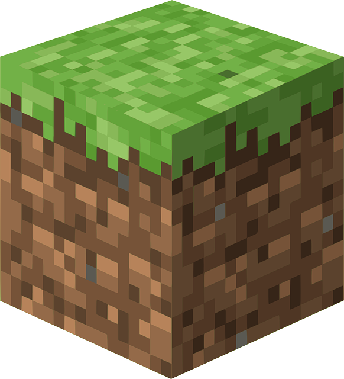

메인
메인



Minecraft
MINECRAFT REALMS FAQ(렐름의 관한 FAQ)
Minecraft는 다양한 플랫폼에서 잘 구동하도록 각기 다른 버전으로 제작되었습니다. Minecraft(모바일, 콘솔, Windows 10에서 만날 수 있는 버전)는 어느 한 종류의 코드에서 동작하고, Minecraft: Java Edition(PC, Mac 및 Linux용)은 또 다른 종류의 코드에서 동작합니다. 이 두 버전은 서로 호환이 안 될 뿐 아니라 별도로 개발되어 기능이 다릅니다. Minecraft:Java Edition의 플레이어들은 콘솔, 모바일, Windows 10 Realms에서 플레이할 수 없고, 그 반대도 마찬가지입니다.
Realms의 요금 정책은 플랫폼 및 국가에 따라 조금씩 다릅니다.
minecraft.net의 여기에서 Java Edition용 Realms을 구입할 수 있으며 요금 옵션표를 볼 수 있습니다.
다른 모든 플랫폼의 경우 Minecraft를 열고 새로운 Realm 만들기를 선택하면 해당 플랫폼 및 국가에서 사용 가능한 요금 옵션을 볼 수 있습니다.
minecraft.net의 여기에서 Java Edition용 Realms을 구입할 수 있으며 요금 옵션표를 볼 수 있습니다.
다른 모든 플랫폼의 경우 Minecraft를 열고 새로운 Realm 만들기를 선택하면 해당 플랫폼 및 국가에서 사용 가능한 요금 옵션을 볼 수 있습니다.
대부분의 플랫폼에서 멤버십은 월간 정기 요금 또는 1개월 또는 6개월 일시불로 사용할 수 있습니다. Java Edition에는 3개월 구독 옵션도 있습니다. 현재 정기 구독 옵션이 허용되지 않는 플랫폼도 있습니다.
어느 버전이든지 Realm 소유자들이 누구를 초대할지 고르고 게임 모드를 변경할 수 있습니다. 모바일, 콘솔, Windows 10의 Realm 소유자들은 초대장 링크를 생성해 새 멤버를 추가하거나 백업한 Realm을 다운로드할 수도 있고, 다른 멤버들을 운영자로 등업해 게임 내에서 베기 명령을 사용할 수 있도록 만들 수도 있습니다.
Realms의 모든 버전에서는 언제든 지도를 내보내기할 수 있습니다. 구독이 만료된 후에도 가능합니다.
네, Realms에 자신만의 맵을 업로드하실 수 있습니다! 현재 저희는 최대 5GB 크기의 월드를 지원하고 있습니다. 모르셨다면, 정말 큰 사이즈라는 점을 말씀드립니다. 모바일용 Minecraft Marketplace, Windows 10 또는 콘솔에서 월드 템플릿을 사용하기 위해서는, 해당 템플릿을 이용해서 새로운 월드를 만든 다음, 귀하의 Realms에 해당 월드를 업로드하셔야 합니다.
Java Edition 버전에서는 커뮤니티에서 사용자 지정 지도와 미니게임이 늘어나는 추세에 맞춰 지원을 강화하고 있습니다. 모바일, 콘솔, Windows 10용 Realms에서는 Marketplace 지도, 텍스쳐, 스킨과 Add-On 지원을 강화하고 있지만 전체 수정 지원은 아직 이용 불가합니다. 죄송합니다!
현재 Realms는 모바일, Windows 10, Xbox One S, Xbox One X 콘솔 및 Nintendo Switch에서 지원하는 Java Edition 및 최신 Bedrock Engine 기반 버전의 Minecraft에서 사용할 수 있습니다.
Xbox Live는 콘솔, 모바일, Windows 10 플레이어들을 한데 연결하는 데 사용 중인 기술입니다. Minecraft Java Edition에서는 Xbox Live가 전혀 필요하지 않습니다. Xbox Live의 이름이 Xbox 콘솔에서 따온 것이기는 하나, Xbox가 필요한 것도 아닐 뿐 아니라 완전히 무료로 사용할 수 있습니다.
Xbox One S나 Xbox One X에서 플레이 중인 경우에만 필요합니다. Xbox Live Gold는 어떤 콘솔 게임을 플레이 중이건 간에 Xbox One에서 제공하는 모든 멀티플레이어 서비스의 필수 사항입니다. Xbox Live Gold는 유료 서비스로, 모바일이나 Windows 10용 Realms에 접속할 때는 필수가 아닙니다. 무료로 이용할 수 있는 Xbox Live에 로그인만 하면 됩니다. Minecraft Java Edition에서는 Xbox Live가 아예 필요하지 않습니다. Nintendo Switch에서 멀티플레이어 게임을 하기 위해 Nintendo Switch Online 구독이 필수 사항이며, 이는 Realms의 경우에도 마찬가지입니다.
아동 계정의 경우, Realms를 플레이하기 위해 부모 동의를 받아야 합니다. Xbox Live 계정의 경우 계정 설정에 로그인하고 "멀티플레이어 게임에 참여" 및 "클럽을 만들고 참여할 수 있음"을 허용해야 합니다. Xbox Live 계정에 대한 도움이 필요하면 Xbox 고객 지원으로 연락하십시오. Mojang과 관련된 도움을 받으려면 Mojang 지원에 문의하십시오.
Realms Club이란 Realms 멤버를 위해 특별하게 만들어진 온라인 멤버 모임 장소로 좋아하는 것을 공유하고 교류할 수 있습니다. Club에서 동영상, 사진, 댓글 등 게시물을 서로 공유할 수 있습니다. 사용자의 Realm에 자동으로 생성되며 Realm에 초대한 플레이어는 Club에도 추가됩니다. PC, 모바일 또는 콘솔의 Xbox 앱에서, 또는 Minecraft의 Realms 메뉴에서 직접 Realms Club에 액세스할 수 있습니다. Club은 Minecraft: Java Edition에서 사용할 수 없습니다.
네! Minecraft 버전 대부분에서는 이제 어떤 기종을 이용하건 상관없이 플레이어들끼리 모이는 일이 가능해졌습니다. Xbox One S, Xbox One X, Nintendo Switch, Android, iPhone, iPad, Windows 10, Windows Phone, Amazon Fire 태블릿, Gear VR을 사용 중인 사람이라면 다른 사람들과 함께 플레이할 수 있습니다. Java Edition용 Minecraft 플레이어는 현재 해당 버전 내의 사람들하고만 플레이할 수 있습니다.
플레이 중인 게임의 버전과 일치하는 Realms를 구매해야 합니다. 예를 들어, Windows 10 스토어에서 Minecraft를 구매했다면 Minecraft용 Realms를 구매해야 합니다. 하지만 Minecraft.net에서 Minecraft: Java Edition을 구매했다면 Minecraft: Java Edition용 Realms가 필요합니다.
Realms를 사용하려면 최신 버전의 Minecraft가 필요합니다. Snapshot 릴리스 버전은 지원되지 않습니다.
아니요, Minecraft Beta 업데이트를 미리 체험하는 동안 Realms에 액세스할 수 없습니다.
네. 어떤 플랫폼을 이용 중이든 Realms의 소유자들은 기존의 명령을 대부분 사용할 수 있습니다. 모바일, Windows 10, 콘솔용 Minecraft에서는 멤버들을 운영자로 등업해 해당 멤버들이 게임상에서 베기 명령을 사용하도록 할 수도 있지만, 다른 관리 권한은 일절 부여하지 않습니다.
Java Edition 버전의 경우 Mojang 계정 웹사이트 에 로그인합니다. 웹사이트에 모든 구독 목록이 표시되며 언제든지 취소할 수 있습니다. Minecraft(모바일, 콘솔 또는 Windows 10)의 경우, 처음에 Realms을 활성화한 플랫폼 스토어에서 구독을 관리할 수 있습니다. Realms가 설정된 Minecraft에서 스토어에 액세스할 수 있습니다. 또한 다음 링크를 확인하여 선택한 플랫폼에서 구독을 관리하는 방법에 대한 정보를 볼 수 있습니다.
Xbox
ios
Googleplay
Amazon
이 구독을 취소하기 위한 도움이 필요하면 기기의 앱 스토어에 문의하십시오.
Xbox
ios
Googleplay
Amazon
이 구독을 취소하기 위한 도움이 필요하면 기기의 앱 스토어에 문의하십시오.
구독이 만료되면 온라인상 자신의 Realms 세계에 접속할 수는 없지만 그 세계를 여전히 다운로드할 수 있습니다. 또는 향후에 구독을 갱신하기로 하면 자신의 세계에 다시 접속할 수 있습니다.
혹시 몰라서 다운 받을 곳을 남겨두었어요! 혹은 마인크래프트의 소식을 영상으로 알고 싶을 분을 위해 유튜브도 남겨두었습니다!
(May your adventures be blessed with joy and good luck.)